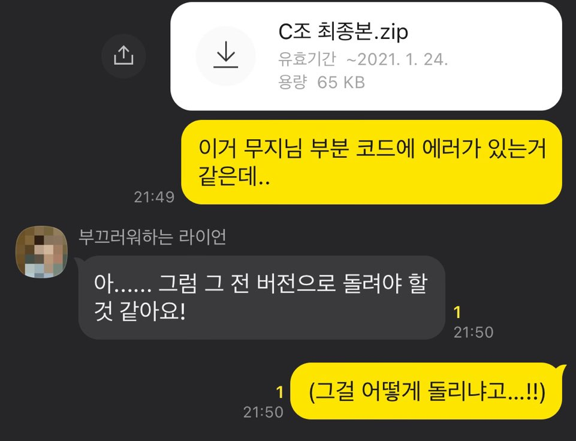
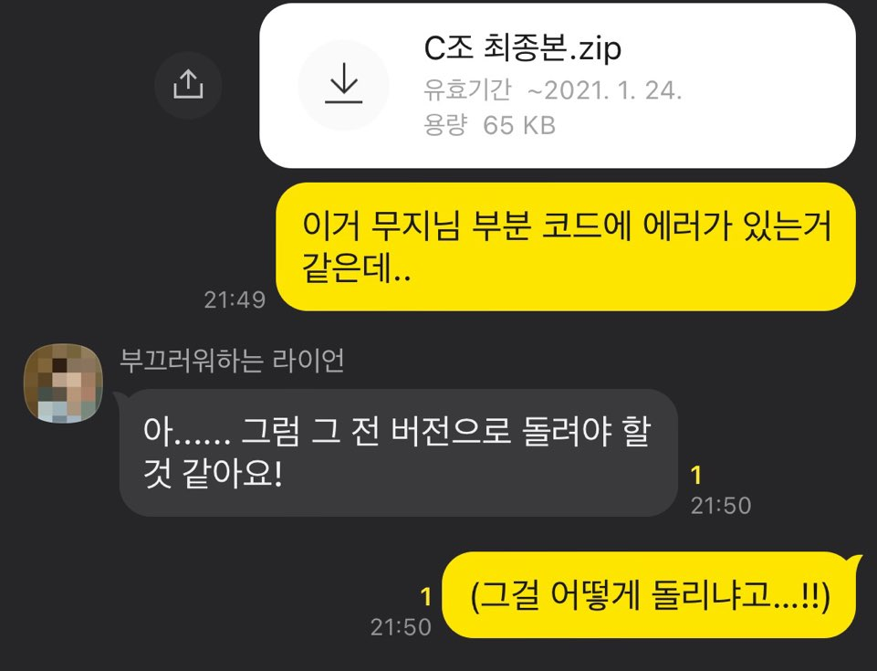

1. Git이란 무엇인가요?
컴퓨터 네트워크, 산학프로젝트 등 팀 단위의 프로젝트를 경험해보신 분들 중에서는 이런 상황이 낯설지 않은 분들도 계실 것입니다.
 

Git은 소프트웨어 버전 관리와 협업을 위한 도구입니다.
"버전 관리" 라는 말이 아직은 와닿지 않을 수도 있지만 대규모 프로젝트를 진행할 때는 프로젝트 진행 상황을 반드시 버전별로 기록해야만 합니다.
그래야만 언제 어떤 부분이 달라졌는지 기록할 수 있고, 코드의 변경사항을 다른 팀원들과 공유할 수 있기 때문입니다.


아직은 뭐가 뭔지 잘 모르겠지만, 튜토리얼을 따라가면서 하나하나 알아가봅시다 :)